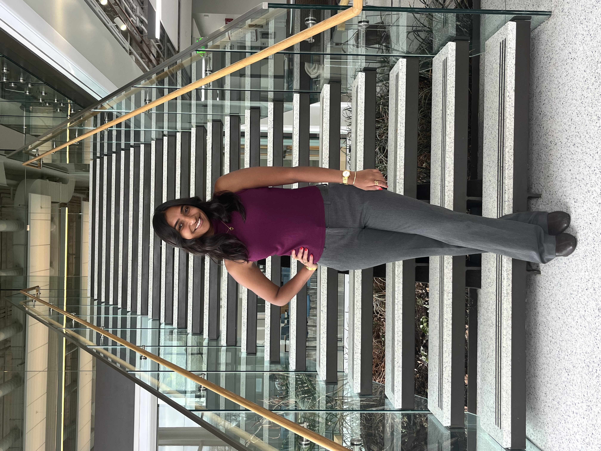
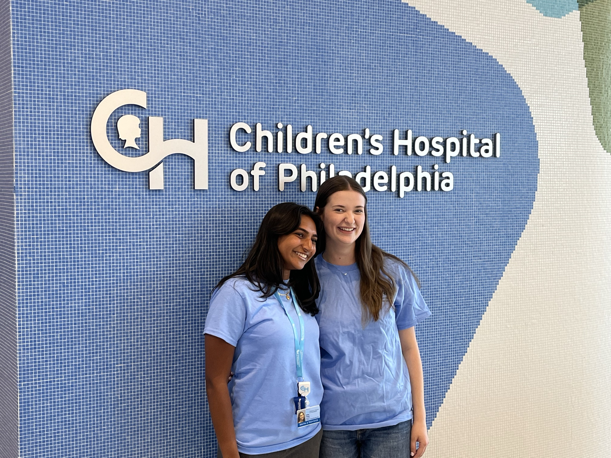
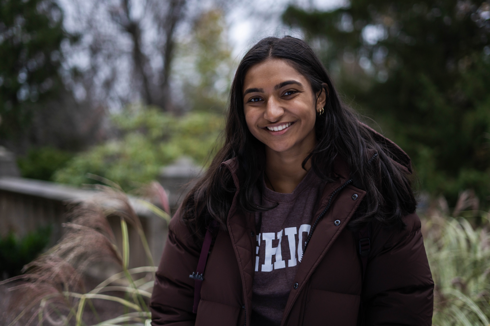

Hi there! I'm Neha Paras, nice to meet you!
Passionate About Digital Health and Population Health Solutions
My interest lies at the intersection between health and technology, where I seek to leverage data in order to improve and install sustainable health outcomes within digital health. I strongly believe in utilizing technology and digital platforms to expand access to care for patients outside of a clinical setting using mobile health applications and innovative technology.
I have valued experience in computational research, epidemiological research methods, infectious disease forecasting, working with the social determinants of health, and delivering presentations. As I further my career path, I continue to feel passionate about transforming population health issues into meaningful solutions with the help of visualizations and mathematical models. I enjoy patient-facing interactions, promoting health literacy and awareness, and working with data to bring meaning to numbers.

Featured Work
Creating a Gamified Disease Outbreak in Real-Time: Watermelon Meow Meow
I created a web application to help simulate a fictitious disease outbreak in real-time, ultimately designed to investigate outbreak dynamics within a real-world social network. In September 2024, over 600 students, faculty, and staff at Lehigh University “transmitted” the infection by sharing around a children's video representing the pathogen in our study.
The website captures who was infected by another and when the infection occured, producing a time-resolved, human-generated transmission network in a closed population. I developed this application using AWS, S3, and Streamlit and included modeling features such as individual level infection tracking, contact network visualizations, and cumulative case graphs.
View Project →Related Articles & Features

My Experience as the First Digital Health Co-op at CHOP
Children's Hospital of Philadelphia
This article details my experiences as the first Lehigh University co-op on the Digital Health team at the Children's Hospital of Philadelphia, where I blended my academic backgrounds of Population Health and Computer Science to propel meaningful innovation on the Remote Patient Monitoring portfolio.
I primarily supported the launch of multiple Care Companion MyChart programs, designed with a special focus on user experience to help families stay engaged with their care between visits. I also drove go-live readiness for five of these software-based programs by coordinating workflow testing with internal Epic analysts, clinical teams, and external vendors to promote smooth, patient-centered deployment.
Read More →
Student Profile for Lehigh University Admissions
Lehigh University Admissions
I was featured in an admissions profile to help promote the upcoming College of Health at Lehigh University, and was thrilled to share how I was making the most of Lehigh from the very beginning! From the start, I was deeply invested in helping define the experience of future students.
As part of the Student Advisory Council, I contributed input towards curriculum design, participated in strategic planning conferences, and worked alongside faculty and the Dean's Advisory Board to ensure that the courses and learning environments reflected what students need. Being part of building something from the ground up is incredibly rewarding, and I am thankful to have been at Lehigh University at the right time!
Read More →
Annual Diwali Show at Lehigh University
South Asian Student Association
Each year, the South Asian Student Association (SASA) at Lehigh University puts on a Diwali Show, where we encourage students to bring talents of all kinds together for a jam-packed night of performance and celebration. This event showcases Hindu culture through a series of musical performances, comedy skits, and an authentic South Asian dinner.
I had the honor of hosting the show for three consecutive years and creatively introduced each peer of mine who contributed towards the show, either on stage or off stage. I was able to participate in two dances amidst my emcee responsibilities for a theater of 1000 people. In my last year, I took part in the Senior Dance and also performed a dance from the Bollywood Dance class that I enrolled in at Lehigh University.
Let's Connect
Feel free to reach out through email or Linkedin using the icons seen below. Looking forward to connecting!